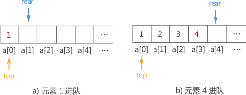
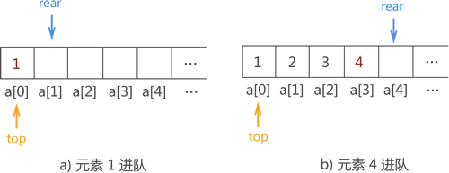

顺序队列及C语言实现（2种方案）
顺序队列，即采用顺序表模拟实现的队列结构。
我们知道，队列具有以下两个特点：
因此，只要使用顺序表按以上两个要求操作数据，即可实现顺序队列。首先来学习一种最简单的实现方法。

图 1 顺序队列实现示意图
由于顺序队列初始状态没有存储任何元素，因此 top 指针和 rear 指针重合，且由于顺序队列底层实现靠的是数组，因此 top 和 rear 实际上是两个变量，它的值分别是队头元素和队尾元素所在数组位置的下标。
在图 1 的基础上，当有数据元素进队列时，对应的实现操作是将其存储在指针 rear 指向的数组位置，然后 rear+1；当需要队头元素出队时，仅需做 top+1 操作。
例如，在图 1 基础上将

图 2 数据进顺序队列的过程实现示意图
在图 2 基础上，顺序队列中数据出队列的实现过程如图 3 所示：

图 3 数据出顺序队列的过程示意图
因此，使用顺序表实现顺序队列最简单方法的 C 语言实现代码为：
顺序队列整体后移造成的影响是：
为了避免以上两点，我建议初学者使用下面的方法实现顺序队列。
为了解决以上两个问题，可以使用巧妙的方法将顺序表打造成一个环状表，如图 4 所示：

图 4 环状顺序队列
图 4 只是一个想象图，在真正的实现时，没必要真创建这样一种结构，我们还是使用之前的顺序表，也还是使用之前的程序，只需要对其进行一点小小的改变：
顺序队列的存储状态不同，但是判断条件相同。为了对其进行区分，最简单的解决办法是：牺牲掉数组中的一个存储空间，判断数组满员的条件是：尾指针的下一个位置和头指针相遇，就说明数组满了，即程序中第 5 行所示。
我们知道，队列具有以下两个特点：
- 数据从队列的一端进，另一端出；
- 数据的入队和出队遵循"先进先出"的原则；
因此，只要使用顺序表按以上两个要求操作数据，即可实现顺序队列。首先来学习一种最简单的实现方法。
顺序队列简单实现
由于顺序队列的底层使用的是数组，因此需预先申请一块足够大的内存空间初始化顺序队列。除此之外，为了满足顺序队列中数据从队尾进，队头出且先进先出的要求，我们还需要定义两个指针（top 和 rear）分别用于指向顺序队列中的队头元素和队尾元素，如图 1 所示：图 1 顺序队列实现示意图
由于顺序队列初始状态没有存储任何元素，因此 top 指针和 rear 指针重合，且由于顺序队列底层实现靠的是数组，因此 top 和 rear 实际上是两个变量，它的值分别是队头元素和队尾元素所在数组位置的下标。
在图 1 的基础上，当有数据元素进队列时，对应的实现操作是将其存储在指针 rear 指向的数组位置，然后 rear+1；当需要队头元素出队时，仅需做 top+1 操作。
例如，在图 1 基础上将
{1,2,3,4} 用顺序队列存储的实现操作如图 2 所示：

图 2 数据进顺序队列的过程实现示意图
在图 2 基础上，顺序队列中数据出队列的实现过程如图 3 所示：
图 3 数据出顺序队列的过程示意图
因此，使用顺序表实现顺序队列最简单方法的 C 语言实现代码为：
#include <stdio.h>
int enQueue(int *a,int rear,int data){
a[rear]=data;
rear++;
return rear;
}
void deQueue(int *a,int front,int rear){
//如果 front==rear，表示队列为空
while (front!=rear) {
printf("出队元素：%d\n",a[front]);
front++;
}
}
int main() {
int a[100];
int front,rear;
//设置队头指针和队尾指针，当队列中没有元素时，队头和队尾指向同一块地址
front=rear=0;
//入队
rear=enQueue(a, rear, 1);
rear=enQueue(a, rear, 2);
rear=enQueue(a, rear, 3);
rear=enQueue(a, rear, 4);
//出队
deQueue(a, front, rear);
return 0;
}
程序输出结果：
出队元素：1
出队元素：2
出队元素：3
出队元素：4
此方法存在的问题
先来分析以下图 2b) 和图 3b)。图 2b) 是所有数据进队成功的示意图，而图 3b) 是所有数据全部出队后的示意图。通过对比两张图，你会发现，指针 top 和 rear 重合位置指向了 a[4] 而不再是 a[0]。也就是说，整个顺序队列在数据不断地进队出队过程中，在顺序表中的位置不断后移。顺序队列整体后移造成的影响是：
- 顺序队列之前的数组存储空间将无法再被使用，造成了空间浪费；
- 如果顺序表申请的空间不足够大，则直接造成程序中数组 a 溢出，产生溢出错误；
为了避免以上两点，我建议初学者使用下面的方法实现顺序队列。
顺序队列另一种实现方法
既然明白了上面这种方法的弊端，那么我们可以试着在它的基础上对其改良。为了解决以上两个问题，可以使用巧妙的方法将顺序表打造成一个环状表，如图 4 所示：
图 4 环状顺序队列
图 4 只是一个想象图，在真正的实现时，没必要真创建这样一种结构，我们还是使用之前的顺序表，也还是使用之前的程序，只需要对其进行一点小小的改变：
#include <stdio.h>
#define max 5//表示顺序表申请的空间大小
int enQueue(int *a,int front,int rear,int data){
//添加判断语句，如果rear超过max，则直接将其从a[0]重新开始存储，如果rear+1和front重合，则表示数组已满
if ((rear+1)%max==front) {
printf("空间已满");
return rear;
}
a[rear%max]=data;
rear++;
return rear;
}
int deQueue(int *a,int front,int rear){
//如果front==rear，表示队列为空
if(front==rear%max) {
printf("队列为空");
return front;
}
printf("%d ",a[front]);
//front不再直接 +1，而是+1后同max进行比较，如果=max，则直接跳转到 a[0]
front=(front+1)%max;
return front;
}
int main() {
int a[max];
int front,rear;
//设置队头指针和队尾指针，当队列中没有元素时，队头和队尾指向同一块地址
front=rear=0;
//入队
rear=enQueue(a,front,rear, 1);
rear=enQueue(a,front,rear, 2);
rear=enQueue(a,front,rear, 3);
rear=enQueue(a,front,rear, 4);
//出队
front=deQueue(a, front, rear);
//再入队
rear=enQueue(a,front,rear, 5);
//再出队
front=deQueue(a, front, rear);
//再入队
rear=enQueue(a,front,rear, 6);
//再出队
front=deQueue(a, front, rear);
front=deQueue(a, front, rear);
front=deQueue(a, front, rear);
front=deQueue(a, front, rear);
return 0;
}
程序运行结果：
1 2 3 4 5 6
使用此方法需要注意的是，顺序队列在判断数组是否已满时，出现下面情况：- 当队列为空时，队列的头指针等于队列的尾指针；
- 当数组满员时，队列的头指针等于队列的尾指针；
顺序队列的存储状态不同，但是判断条件相同。为了对其进行区分，最简单的解决办法是：牺牲掉数组中的一个存储空间，判断数组满员的条件是：尾指针的下一个位置和头指针相遇，就说明数组满了，即程序中第 5 行所示。
关注公众号「站长严长生」，在手机上阅读所有教程，随时随地都能学习。内含一款搜索神器，免费下载全网书籍和视频。

微信扫码关注公众号